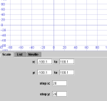
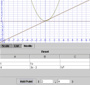

Graph Utilities
Description
This application allows the user to quickly find cool Polynomials with Neville's method of interpolation.
Screenshots
|  |  |
Goals
The major goal was to program an easy to use Graph class to test what I've learned in mathematics. The minor goal was to finally use what I've been dreaming about since september 2002, dynamic loading of class.
Dependencies
This project was written in Java and compiled with JSE v1.4, therefore the appropriate Runtime Environment is required.
Bugs & Thoughts
The wicked cool method of loading class at run-time is so twisted, it's changing all my perception of programmation. Before, I was considering C++ to be my favorite language (for it's, oh so delicious, pointers) though I prefered Java's syntax. But now, Java is the best. Think about it, by loading class dynamicly, Java can be the script for game events. Later, though very cool, long to work with lex & yacc.
I had planned to add another panel that would have allowed parsing an expression supplied by the user in the form of: ( 3 * cos( x ) / ( 2x^4 - atan( x ) ) ), but I was getting bored of the project so I never made it. I do plan adding the feature in a later release, when interest will kick back.
The formulas aren't buffered individually, but in group. Which means that on every rescale or when a formula is removed, every formulas are re-evaluated. Perhaps I could have design this in another way, but it's fine like this to me.
Credits
I will thank Neville for his Polynomial interpolation method. Of course, the application was made by me, David Lareau.
Download
Instruction
To run as an application, you have to do: java -jar GraphUtilities.jar
To run as an applet, click here: GraphUtilities
Dependencies download links
{kind=link}
{kind=link}
{kind=link}